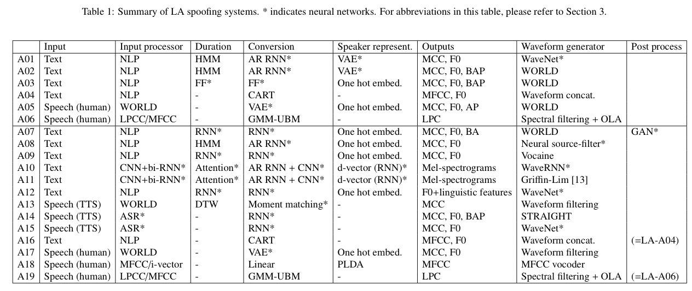
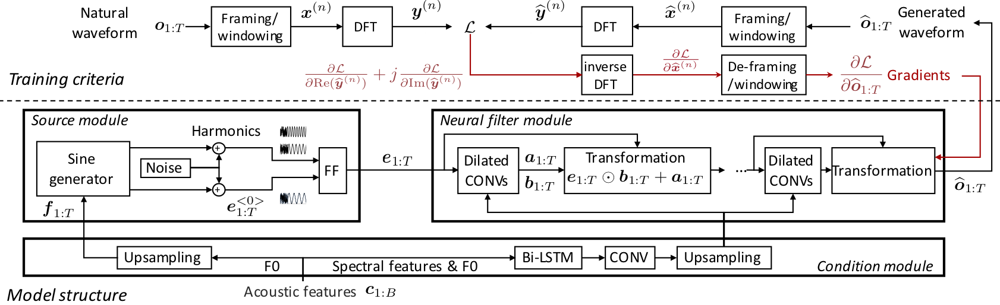
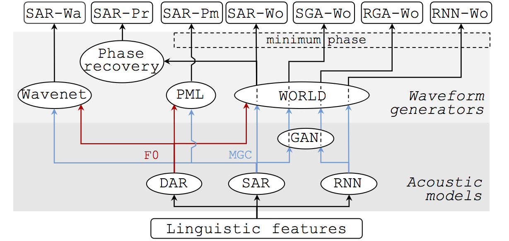
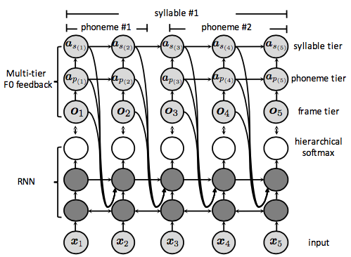
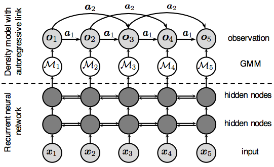
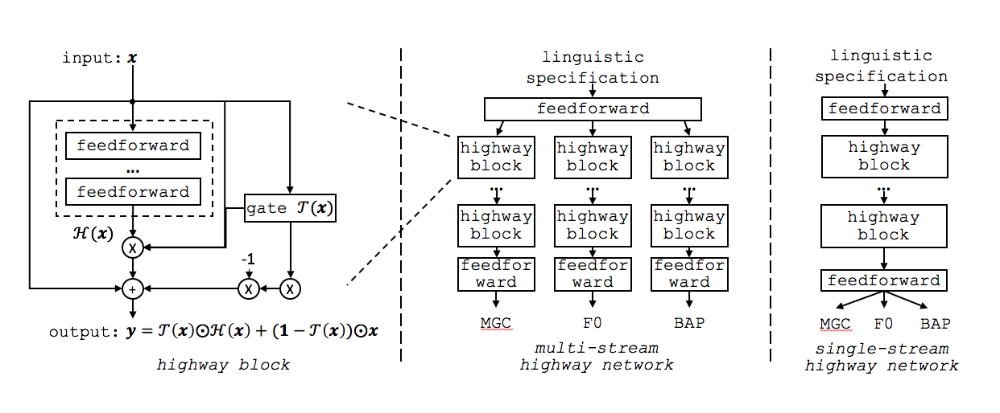
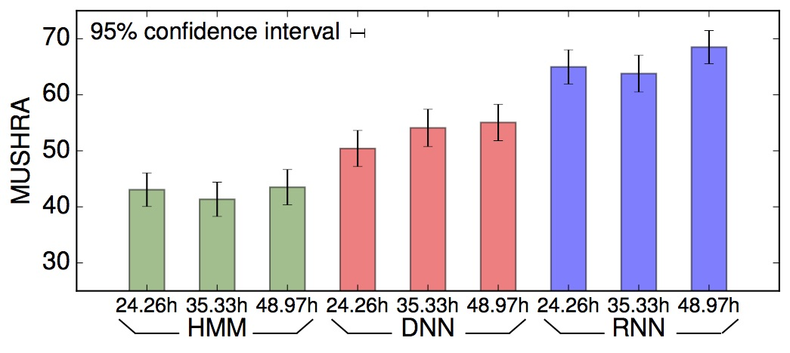
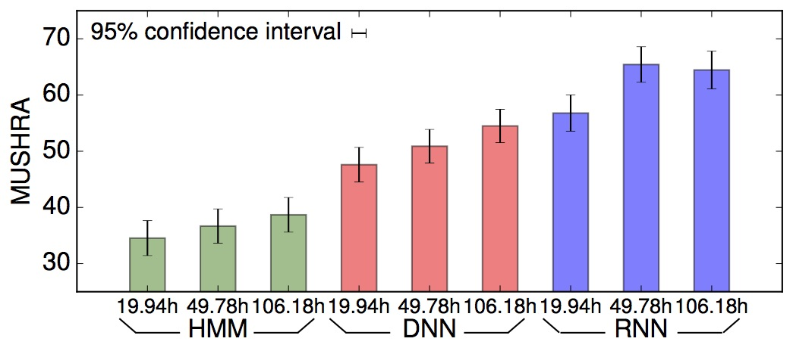
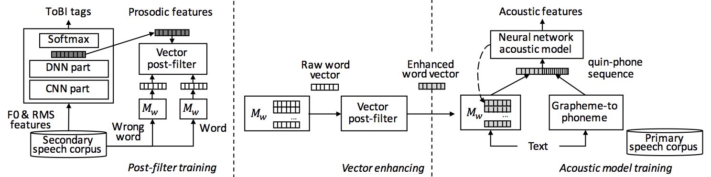
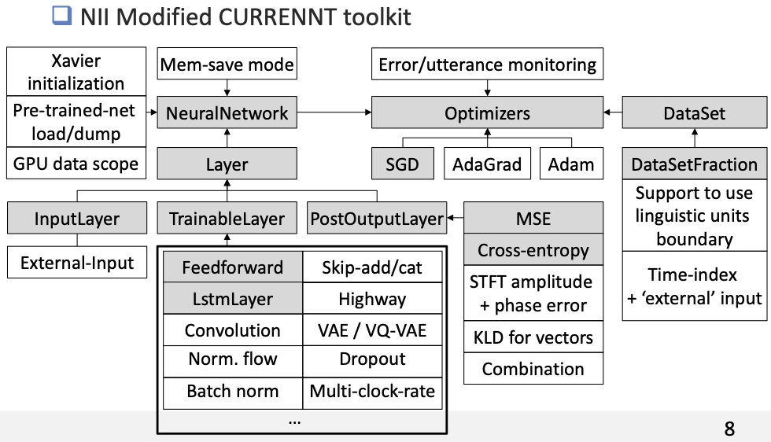

Research¶
Ph.D¶
My PhD thesis focuses on F0 modeling. It includes an investigation using highway network, detailed explanation about many aspects of autoregressive (AR) models, and new models based on variational autoencoder (VAE).
Title: Fundamental Frequency Modeling for Neural-Network-Based Statistical Parametric Speech Synthesis
Thesis (submitted 2018-06-29): thesis PDF version
Slides for thesis defense: defense slides
Appendix: highway network, SAR, DAR, VQ-VAE
Many details and results are not reported in the thesis. Please check appendix.
ASVspoof¶
ASVspoof 2019 LA database¶
{kind=link}
A large scale database with bona fide (real) and spoofing (fake) audios from many advanced TTS or VC systems. It publically available:
{kind=link}
NSF model¶
{kind=link}
A non-autoregressive neural source-filter waveform model that performs reasonably well in terms of speech quality but faster on generation speed. No distilling is needed for model training.
Here is the Home page of NSF model.
Text-to-speech¶
My own work on text-to-speech (TTS) is on classical statistical parametric speech synthesis.
TTS comparison¶
{kind=link}
This work compares recent acoustic models and waveform generators: SAR and DAR refers to the acoustic models on this page below; WORLD and PML are waveform generators. This was published in ICASSP 2018
It was presented at slide at ICASSP 2018
Tool: WaveNet in CURRENNT is implemented on CUDA/Thrust. Code for WaveNet
Deep AR F0 model¶
{kind=link}
An old idea for machine learning and signal processing but not well investigated for neural-network-based speech synthesis. The motivation is that RNN may not model the temporal correlation of the target feature sequence as we expect. A simple technique to examine the capability of the model is to draw samples from the model. On this aspect, none of the previous model can generate good F0 contours by random sampling.
It is detailed in this journal paper (open access)
It is also detailed in Ph.D thesis (ch.6)
More details are in Ph.D defense slides
It was presented at Interspeech 2018
Shallow AR acoustic model¶
{kind=link}
RNN is a special recurrent mixture density network (RMDN). While both networks use recurrent layers, neither captures the temporal correlation of the target features. Similar to the F0 model above, autoregressive links can be used to amend the missing temporal correlation. This model is called shallow because it only uses linear transformation to model the AR dependency.
I like this model becaue it is related to signal processing, linear-prediction, normalization flow …
It is detailed in Ph.D thesis (ch.5)
More details are in Ph.D defense slides
It was presented at ICASSP 2017
Highway Network¶
{kind=link}
This work investigates highway network for speech synthesis and got some interesting observations:
The accuracy of the generated spectral features can be improved consistently as the depth of the multi-stream highway network was increased from 2 to 40
F0 can be generated equally well by either a deep or a shallow network in the multi-stream network
The single-stream network must be large enough to model both spectral and F0 features well
Analysis on the histogram of the highway gates supports the above observations
Here are some materials for reference:
It is detailed in Ph.D thesis (ch.4)
More details are in Ph.D defense slides
It was published as a journal paper on Speech Communication
Another comparison¶
 {kind=link}
{kind=link}
This initial work tries to show the influence of the amount of training data on the performance of the speech synthesis system. Two large Japanese corpora were utilized (female 50 hours, male 100 hours). The result indicates that we can not benefit from (blindly) increasing the amount of training data for spectral feature modelling.
It is presented at SSW 2016
Prosody Embedding¶
{kind=link}
This work consists of two parts:
Among embedded vectors of phoneme, syllable, and phrase, the phrase vector can be useful for feed-forward network. For recurrent network, not so useful;
Word vectors can be enhanced by prosodic information extracted from a ToBI annotation task.
Here are materials:
The paper was published in Interspeech 2016
Also in IEICE journal
Toolkit¶
Modified CURRENNT¶
{kind=link}
Most of my work was doen using CURRENNT, a CUDA/Thrust toolkit for neural networks. I made intensive revision and added many functions as the above figure shows. It is slow but enjoyable experience to write forward and backward propagation of each neurons through CUDA/Thrust.
The modified toolkit and utility scripts are on github.
There are a few slides where I summarized my understanding on coding with CUDA/Thrust. Please check the Talk & slides.
Here is the original CURRENNT toolkit.
Pytorch Project¶
Recently I started to use Pytorch. The first project is to re-implement NSF models using Pytorch.
This project comes with demonstration and tutorials: https://github.com/nii-yamagishilab/project-NN-Pytorch-scripts